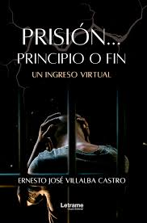

Con la muerte a cuestas
Una obra que retrata los apartes más duros de la guerra en Medellín desde la perspectiva de un ex policía. Historia real, cruda, humana.
Prisión... Principio o Fin
Un ingreso virtual al sistema penitenciario colombiano. Un hombre encuentra en la escritura una vía de redención y libertad interior.
Sobre el autor
Ernesto José Villalba Castro, nacido en Barranquilla, es ex miembro de la fuerza pública y ahora escritor de narrativa testimonial sobre conflicto armado y redención.